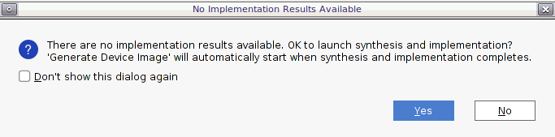

Versal カスタム プラットフォーム作成チュートリアル |
手順 0: VCK190 用のベースのブータブル デザインの作成¶
手順 0 では、プラットフォーム作成のベースラインの提供を目的とします。
Versal デザインの開始点には、さまざまな作成方法があります。このチュートリアルでは、カスタマイズ可能な Vivado サンプル デザインを使用して CIPS ブロックと NOC ブロックをコンフィギュレーションします。このデザイン例はザイリンクスによって検証されているため、ブート可能な基本デザインのテストは省略します。カスタム ボードまたはカスタム デザインの場合は、通常の Vivado プロジェクト (Vitis プラットフォーム プロジェクトではない) を作成し、カスタム ボードの追加手順に従ってデザインを検証してください。
VCK190 ES1 のセットアップ¶
注記: VCK190 プロダクション ボードを使用している場合は、この手順を飛ばしてください。
VCK190 ES1 のセットアップ手順の表示
VCK190 ES1 設定: Versal ES デバイスのイネーブル¶
<Vivado_Installation_Path>/scripts/Vivado_init.tcl および <Vivado_Installation_Path>/scripts/hls_init.tcl に次の行を追加します。
enable_beta_device xcvc*VCK190 ES1 の設定: VCK190 ES1 ボード ファイルのダウンロード¶
注記: VCK190 プロダクション ボードを使用している場合は、この手順を飛ばしてください。
Vivado の起動
source <Vitis_Install_Directory>/settings64.shを実行して、Vivado 実行環境を設定します。コンソールに
vivadoと入力して Vivado を実行します。
VCK190 ES1 ボード ファイルをダウンロードします。
[Tools] → [XHUB Store] をクリックします。
[OK] をクリックして同意します。
[Board] タブをクリックします。
[Evaluation Boards] を展開します。
[Versal VCK190 ES1 Evaluation Platform] をクリックします。
[Install] ボタンをクリックします。
[Close] をクリックしてウィンドウを閉じます。
Versal エクステンシブル エンベデッド プラットフォームのデザイン例¶
Vivado を起動していない場合は、起動します。
source <Vitis_Install_Directory>/settings64.shを実行して、Vivado 実行環境を設定します。コンソールに
vivadoと入力して Vivado を実行します。
Versal エクステンシブル エンベデッド プラットフォームの例のダウンロード
[Tools] → [Vivado Store] をクリックします。
[OK] をクリックして、ウェブからオープンソースのサンプルのダウンロードに同意します。
[Platform] → [Versal Extensible Embedded Platform] をクリックし、ツールバーのダウンロード ボタンをクリックします。
インストールが終了したら [Close] をクリックします。

Versal エクステンシブル エンベデッド プラットフォーム例のプロジェクトの作成
[File] → [Project] → [Open Example] をクリックします。
[Select Project Template] ウィンドウで [Versal Extensible Embedded Platform] をオンにします。
[Project Name] および [Project location] を入力します。[Create project subdirectory] はオンのままにします。[Next] をクリックします。
[Default Part] ページでターゲット ボードを選択します。この例では、Versal VCK190 Evaluation Platform または Versal VCK190 ES1 Evaluation Platform を使用します。[Next] をクリックします。

[Configure Clocks Settings]: このページでは、より多くのクロックをイネーブルし、出力周波数を更新し、デフォルト クロックを定義できます。この例では、デフォルト設定のままにします。
[Configure Interrupt Settings]: このプラットフォームのサポートする割り込みの数を選択できます。63 割り込みモードの場合、カスケード モードで 2 つの AXI_INTC が使用されます。この例では、デフォルト設定のままにします。
[Configure Memory Settings]: このデザイン例では、デフォルトで DDR4 のみをイネーブルにします。LPDDR4 をイネーブルにすると、DDR4 と LPDDR4 の両方がイネーブルになります。この例では、デフォルト設定のままにします。
[Next] をクリックします。
新しいプロジェクト サマリを確認し、[Finish] をクリックします。
しばらくすると、デザイン例が生成されたことがわかります。
生成されたデザインでは AI エンジンがインスタンシエートされ、DDR4 コントローラーがイネーブルになり、CIPS に接続されます。また、1 つの割り込みコントローラー、3 つのクロック、および関連する同期リセット信号も提供されます。

この段階で、Vivado ブロック オートメーションにより、CIPS (Control、Interface & Processing System) ブロック、AXI NOC ブロック、AI エンジン、およびすべてのサポート ロジック ブロックを図に追加し、VCK190 のすべてのボード プリセットを適用しました。このデザインは既に検証済みなので、手順 1: Vitis プラットフォームのハードウェア設定に進んで、プラットフォーム設定を確認または更新し、次の検証は飛ばします。
カスタムボードの場合、プラットフォーム開発者は CIPS と NOC をコンフィギュレーションして、プロセッサおよび DDR を設定する必要があります。次の手順に進む前に、次のテストを実行してください。
カスタム ボードの追加手順¶
カスタム ボード上のプラットフォームを設計する場合、先に進む前に、ボード上のブート可能な基本設計を検証する必要があります。次のプラットフォーム作成手順でエラーが発生した場合、その原因がカーネル、プラットフォームの作成、またはベース デザインのコンフィギュレーションなのかによって、根本的な原因を特定するのに役立ちます。
カスタム ボードの注意点¶
カスタム ボード用にプラットフォームを設計する場合、次のパラメーターはユーザーが設定する必要があります。
Vivado プロジェクトで次を実行します。
ボード タイプではなく、シリコン モデルに基づいてデザインを作成します。一から作成することも可能ですし、Versal エクステンシブル プラットフォーム例からデザインを作成してからデバイスを更新することも可能です。
クロック入力パラメーターはハードウェア設定と同じになるようにします。
PS ペリフェラル (UART、SD カード、QSPI など) を設定します。
クロック、リセット、DDR などを含む XDC ファイルにピン配置を記述します。
PetaLinux デザインの場合は、次を実行します。
デフォルトの MACHINE_NAME を使用してください。
イーサネット、EEPROM などのボードのカスタム ペリフェラル用に system_user.dtsi のデバイス ツリーを更新します。
(オプション) インプリメンテーションおよびデバイス イメージ生成¶
カスタム プラットフォームを最初から作成する場合は、インプリメンテーションとデバイス イメージの生成を実行して、ブート可能なベース デザインの初期段階でエラーを検出することをお勧めします。プラットフォームはインプリメンテーション結果を必要としません。インプリメンテーションはデザイン検証のみに使用されます。
インプリメンテーションおよびデバイス イメージ生成の詳細手順を表示
この手順を実行するには、プロジェクトが通常のプロジェクトである必要があります。Vivado プロジェクトの作成時には、[This project is a Vitis Platform project] はオフにする必要があります。[Flow Navigator] → [Project Manager] → [Settings] をクリックします。[This project is a Vitis Platform project] がオンになっている場合は、これをオフにします。
ブロック デザインを検証します。
ブロック図のツールバーの [Validate Design (F6)] ボタンをクリックします
HDL ラッパーを作成します。
[Sources] タブで system.bd を右クリックし、[Create HDL Wrapper] をクリックします。ポップアップ ウィンドウで、[Let Vivado Manage] を選択します。
デバイス イメージを生成します。
Flow Navigator で [Generate Device Image] をクリックします。
「No Implementation Results Available」というメッセージが表示されたら [Yes] をクリックします。

[Launch Runs] ダイアログ ボックスのオプションはデフォルトのままで [OK] をクリックします。
ブロック図を生成し、インプリメンテーション全体を実行するには時間がかかります。
PDI は
vck190_custom_platform.runs/impl_1/に生成されます。PetaLinux プロジェクト作成用に Fixed XSA をエクスポートします。
a) [File] → [Export] → [Export Hardware] をクリックします。[Next] をクリックします。
b) [Output] を [Include Device Image] にします。[Next] をクリックします。
c) 出力 XSA ファイル名とディレクトリを設定します。[Next] をクリックします。
[Finish] をクリックします。
(オプション) ハードウェアの PDI の検証¶
カスタム プラットフォームを最初から作成する場合は、デバイスの初期化コンフィギュレーションが正しく設定されるように、ハードウェアでデバイスイメージ (PDI) をテストすることをお勧めします。これはプラットフォームの作成に必要な手順ではありませんが、最後のプラットフォーム検証段階で見つかる問題を減らすことができます。
この手順を実行するには、プラットフォームの作成時に [This project is a Vitis Platform project] をオフにする必要があります。
詳細な手順を表示
XSCT でハードウェア サーバーを接続します。
# If JTAG cable is connected locally connect # If JTAG cable is connected on another server, launch hw_server on that server then connect to that remote hardware server connect -url TCP:<SERVER NAME or IP>:3121
XSCT で PDI をダウンロードします。
device program <PDI file>
PDI プログラムはエラーなくダウンロードする必要があります。XSCT コンソールでエラーが発生した場合は、ブロック デザインの設定を確認してください。
VCK190 ボードの UART コンソールに次の例のように表示されます。
ログを表示
[8.716546]**************************************** [10.387178]Xilinx Versal Platform Loader and Manager [15.181959]Release 2020.2 Nov 30 2020 - 07:20:11 [19.889662]Platform Version: v1.0 PMC: v1.0, PS: v1.0 [24.684093]BOOTMODE: 0, MULTIBOOT: 0x0 [28.172159]**************************************** [32.817343] 28.506881 ms for PrtnNum: 1, Size: 2224 Bytes [37.939565]-------Loading Prtn No: 0x2 [41.975581] 0.531603 ms for PrtnNum: 2, Size: 48 Bytes [46.307975]-------Loading Prtn No: 0x3 [153.848428] 104.031565 ms for PrtnNum: 3, Size: 57168 Bytes [156.392071]-------Loading Prtn No: 0x4 [159.994956] 0.012506 ms for PrtnNum: 4, Size: 2512 Bytes [165.110546]-------Loading Prtn No: 0x5 [168.715028] 0.014362 ms for PrtnNum: 5, Size: 3424 Bytes [173.831756]-------Loading Prtn No: 0x6 [177.430206] 0.007693 ms for PrtnNum: 6, Size: 80 Bytes [182.427400]+++++++Loading Image No: 0x2, Name: pl_cfi, Id: 0x18700000 [188.652918]-------Loading Prtn No: 0x7 [1564.072421] 1371.823162 ms for PrtnNum: 7, Size: 707472 Bytes [1566.876806]-------Loading Prtn No: 0x8 [1956.351062] 385.792100 ms for PrtnNum: 8, Size: 365712 Bytes [1959.102465]+++++++Loading Image No: 0x3, Name: fpd, Id: 0x0420C003 [1965.172668]-------Loading Prtn No: 0x9 [1969.287834] 0.436437 ms for PrtnNum: 9, Size: 992 Bytes [1974.032078]***********Boot PDI Load: Done************* [1979.057962]55080.597596 ms: ROM Time [1982.528018]Total PLM Boot TimePDI が正常にロードできない場合は、CIPS 設定を確認してください。
(オプション) PetaLinux プロジェクトの作成¶
カスタム プラットフォームを最初から作成する場合は、このプロジェクトをプラットフォーム プロジェクトにする前に、PetaLinux イメージのビルドをテストし、ハードウェア上で実行することをお勧めします。これはプラットフォームの作成に必要な手順ではありませんが、「手順 2 - ソフトウェアの準備」で発生する問題を減らすことができます。
この手順を実行するには、プラットフォームの作成時に [This project is a Vitis Platform project] をオフにする必要があります。
詳細な手順を表示
簡単に説明するため、ここでは VCK190 のプリビルドのデバイス ツリーを使用します。ツリーを使用すると、イーサネット MAC の PHY アドレスなどのペリフェラル プロパティを設定しやすくなります。これらの設定はボードによって異なります。カスタム ボードのボード立ち上げ段階中に BSP エンジニアが開発する必要があります。
XSA を使用して PetaLinux プロジェクトを作成します。
petalinux-create -t project --template versal --force -n petalinux cd petalinux petalinux-config --get-hw-description=<path to xsa directory> --silentconfig
作成される PetaLinux プロジェクト名は petalinux です。PetaLinux プロジェクト名は petalinux-create -n オプションで自由に変更できます。
PetaLinux に使用する XSA は、インプリメンテーション後の XSA である必要があります。
VCK190 デバイス ツリーを適用します。
petalinux-configを実行します。[DTG Settings] をクリックします。
MACHINE_NAME オプション (CONFIG_SUBSYSTEM_MACHINE_NAME) に versal-vck190-reva-x-ebm-02-reva を入力します。
注記: このプリセット デバイス設定により、デバイス ツリーにイーサネット PHY 情報が追加されます。デバイス ツリーのソース コードが PetaLinux プロジェクトに適用されます。
PetaLinux イメージのビルド
petalinux-build petalinux-package --boot --u-boot
BOOT.BIN、boot.scr、image.ub 出力ファイルは images/linux ディレクトリに含まれます。
ボードの PetaLinux イメージの検証
build/petalinux/images/linux ディレクトリから BOOT.BIN、image.ub、および boot.scr を SD カード (fat32 パーティション) にコピーします。
SD カードを VCK190 に挿入し、ブート モードを SD boot (0001) に設定して、ボードを起動します。
Linux が正常に起動することを確認します。ユーザー名 root、パスワード root でログインします。
ファスト トラック¶
プロジェクトを再作成し、手順ごとに出力を生成するスクリプトが提供されています。これらのスクリプトを使用するには、次の手順を実行します。
ビルドを実行します。
# cd to the step directory, e.g. cd step0_bootable_design make all
生成されたファイルをクリーンアップするには、次を実行します。
make clean
このスクリプトは、VCK190 ES1 ボードのサポートと Versal Extensible Design の例をローカル リポジトリにダウンロードし、デザイン例を作成し、ブロック図を生成して XSA をエクスポートします。
最上位のオールインワン ビルド スクリプトも提供されています。1 つのコマンドですべて (手順 0 から手順 4) をビルドするには、ref_files ディレクトリに移動して実行します。
make all生成されたファイルすべてを一掃するには、次を実行します。
make cleanVivado デザインの Vitis プラットフォーム デザインへの変更¶
次の手順から、プラットフォーム プロパティの設定を開始します。Vivado デザインを Vitis プラットフォーム デザインにする必要があります。
[Flow Navigator] ウィンドウを表示します。
[Project Manager] の [Settings] をクリックします。
[Project Settings] → [General] で [Project is an extensible Vitis platform] をオンにします。
参考資料¶
https://github.com/Xilinx/XilinxBoardStore/wiki/Accessing-the-Board-Store-Repository
Copyright© 2021 Xilinx